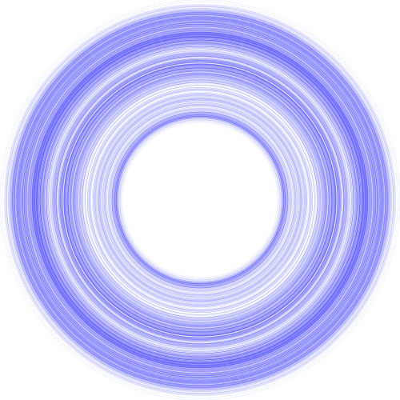

Generative Art Stack
Posted on August 12, 2018
Extensions and Imports
{-# LANGUAGE NoMonomorphismRestriction #-}
{-# LANGUAGE FlexibleContexts #-}
{-# LANGUAGE TypeFamilies #-}
{-# LANGUAGE TemplateHaskell #-}
import Control.Monad
import qualified Control.Monad.State as State
import Control.Monad.Trans.Class (lift)
import Control.Monad.Trans.RWS.Lazy
import System.Random
import Data.Random
import Data.RVar
import Diagrams.Prelude hiding (normal)
import Diagrams.Backend.Cairo -- for Cairo type constructor
import qualified Diagrams.Color.XKCD as XKCD
import Data.Colour (withOpacity)
import Data.Tuple
import Data.Tree
import Data.Default
import Control.Lens hiding ((#))Main Types, Classes, and Helper Functions
newtype Laws = Laws { _circleTemp :: Double } -- constant factors / laws of nature
makeLenses ''Laws
instance Default Laws where
def = Laws { _circleTemp = 0 }
data Env = Env { _circleRad :: Double} -- variable factors / environment
makeLenses ''Env
instance Default Env where
def = Env { _circleRad = 0}
type Drawing = QDiagram Cairo V2 Double Any -- a monoid
type Artist = RWST Laws Drawing Env RVarsampleArtist seed laws env artist = State.evalState (sampleRVar randomDrawing) $ mkStdGen 1
where randomDrawing = snd <$> execRWST artist laws env -- execRWST returns RVar (state, writer)Artists
circleArtist :: Artist ()
circleArtist = do
temp <- asks _circleTemp
delta <- lift $ normal 0 temp
modify $ over circleRad (+ delta)
rad <- gets _circleRad
tell $ circle rad # lw 0.5 # lcA (blue `withOpacity` 0.1)

Diagrams can be inserted after their definition so long as they are rendered in main at the end of the file.
Main
main :: IO ()
main = do
let laws = def & circleTemp .~ 0.02 :: Laws
env = def & circleRad .~ 1 :: Env
output = sampleArtist 1 laws env $ replicateM 1000 circleArtist
renderCairo "resources/output.png" (mkWidth 500) output